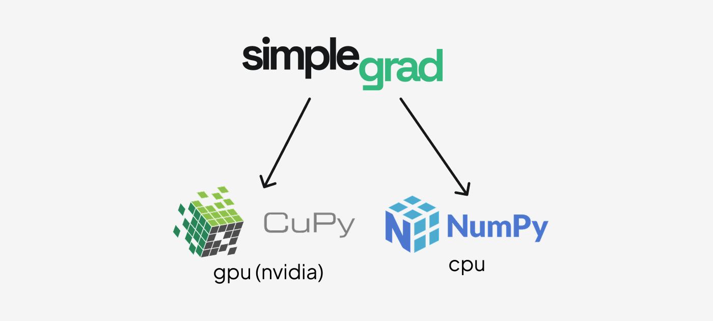
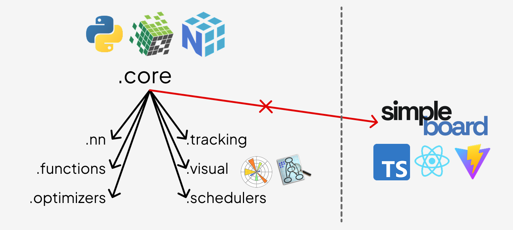

Introduction
Simplegrad is the simplest complete deep learning framework you can actually use. Every part of the stack — from autograd to optimizers — is written in plain Python so that you can read the source and follow exactly what happens during training.
Architecture
Backends
Simplegrad runs on two compute backends depending on the device:

- NumPy — CPU compute. The default. No extra dependencies.
- CuPy — GPU compute on NVIDIA CUDA. Install CuPy and tensors created with
device="cuda:0"use the GPU automatically.
The backend is selected per-tensor at creation time. The rest of the framework is backend-agnostic: every operation dispatches to ctx.backend (either numpy or cupy) at runtime.
Package organization
.core is the foundation. Every other module — functions, nn, optimizers, schedulers, track, visual — imports from .core. simpleboard is the only exception: it is fully standalone and does not import from any other part of the package.

Module overview
core/ — The heart of the framework. autograd.py contains the Tensor class and the Function base class that every differentiable operation subclasses. The engine records the forward computation graph and walks it in reverse during .backward() to accumulate gradients via the chain rule. core/ also defines Module, Optimizer, and Scheduler base classes used throughout the rest of the package.
functions/ — A library of differentiable operations: element-wise math (log, exp, sin, cos), activations (relu, tanh, sigmoid, softmax), reductions (sum, mean), losses (ce_loss, mse_loss), 2D convolution, pooling, and shape transforms. Each operation subclasses Function and provides forward and backward static methods.
nn/ — Neural network layers that wrap the functional operations behind a stateful Module interface. Includes Linear, Conv2d, MaxPool2d, Dropout, Embedding, Flatten, Sequential, activation layers, and loss layers. All layers expose a .parameters() dict used by optimizers.
optimizers/ — Parameter update rules. SGD supports momentum and dampening. Adam maintains bias-corrected first and second moment estimates. Both accept any Module and call .parameters() to find what to update.
schedulers/ — Learning rate schedules that wrap an Optimizer and call .set_lr() on each .step(). LinearLR interpolates linearly between a start and end rate; ExponentialLR decays by a fixed multiplicative factor; CosineAnnealingLR follows a cosine curve; ReduceLROnPlateauLR reduces when a monitored metric stalls.
track/ — Experiment tracking backed by SQLite. Tracker lets you log scalar metrics at each training step, attach computation graphs to runs, and query historical results. Experiments are stored as .db files under a configurable directory.
visual/ — Inline visualizations for notebooks. graph() renders the computation graph of any tensor as a Graphviz SVG. plot() and scatter() draw training metric line and scatter charts.
simpleboard/ — A standalone web dashboard for exploring experiment runs. Launch it with simpleboard from the terminal. It does not import from the rest of the package.
Full training example
import simplegrad as sg
# Build a small classifier
model = sg.nn.Sequential(
sg.nn.Linear(4, 16),
sg.nn.ReLU(),
sg.nn.Linear(16, 3),
)
loss_fn = sg.nn.CELoss()
optimizer = sg.opt.Adam(model, lr=1e-3)
# Toy data
x_train = sg.Tensor([[0.1, 0.2, 0.3, 0.4]] * 8, label="x")
y_train = sg.Tensor([[1, 0, 0]] * 8, label="y")
# Training loop
for step in range(200):
optimizer.zero_grad()
logits = model(x_train)
loss = loss_fn(logits, y_train)
loss.backward()
optimizer.step()
if step % 50 == 0:
print(f"step {step} loss {loss.values:.4f}")
Lazy mode
By default simplegrad runs in eager mode: every operation executes immediately and returns a fully realized Tensor. Lazy mode defers execution until you call .realize(), which lets the engine fuse the whole computation into a single forward pass:
with sg.lazy():
a = sg.Tensor([1.0, 2.0])
b = sg.Tensor([3.0, 4.0])
c = a + b # not computed yet — c.values is None
d = sg.mean(c) # also deferred
d.realize() # executes the full graph in one shot
print(d.values) # 3.5
You can also toggle modes globally:
Experiment tracking
from simplegrad.track import Tracker
tracker = Tracker("./experiments")
tracker.set_experiment("mnist")
run_id = tracker.start_run(name="baseline", config={"lr": 1e-3})
for step in range(100):
# ... training step ...
tracker.record("loss", loss.values.item(), step=step)
tracker.end_run()